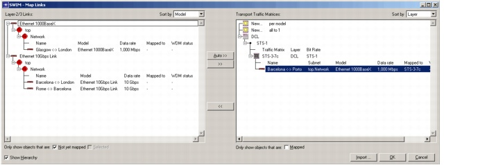

Mapping Layer-2/3 Links to Transport Connections > SWIM - Map Links Dialog Box
SWIM - Map Links Dialog Box
To open this dialog box, choose SWIM > Node/Link Mapping > Link Mapping in the Project Editor of SP Guru Network Planner. For procedure descriptions, see Mapping Links: Procedure Descriptions.
Figure 5-1 SWIM - Map Links Dialog Box

| Home © 1987-2007 OPNET Technologies, Inc. All Rights Reserved. This software may be covered by one or more U.S. Patents. See complete patent notice in the Legal Notices section. OPNET Support Center |